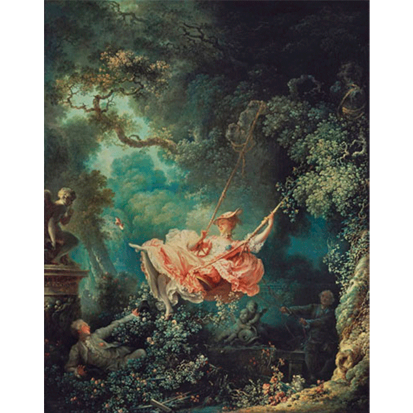
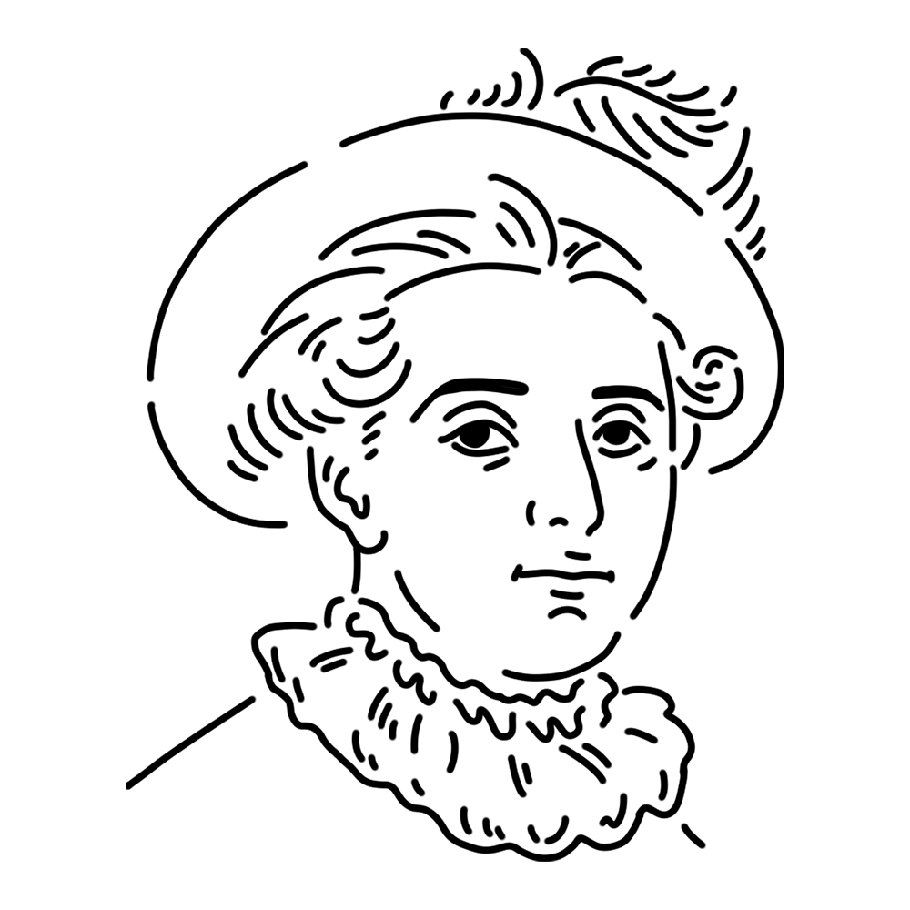

A muse active at the end of the Rococo period. Her dreamy, vibrant paintings are filled with happiness and romance. She loves ice cream, but recently has been limiting herself to one a day because it's not healthy.
Kingdom of France
"The Swing"
"A Young Girl Reading"
"The Progress of Love" etc.

A woman swings lightly on a swing. The man pushing the swing on the right is the woman's husband, and the man hiding in the bushes on the lower left is the woman's lover. Each of the motifs, such as the one missing shoe and the tiny dog, also suggests the entanglement of love. This work is like a romantic comedy and can be said to be the culmination of Rococo art.
Year
1767
Medium
Oil on canvas
Dimension
81cm x 64.2cm
Collection
Wallace Collection (UK)

A painter active until the end of the Rococo period. It is no exaggeration to say that the flamboyant colors, light compositions, and sweet subjects that he produced in response to the fashionable style demanded by his patrons were the culmination of Rococo art. However, as time passed and Rococo declined with the French Revolution, Fragonard's status also fell, and he lived in poverty in his later years. It is a sad story. It is well known that he died of cerebral infarction after eating ice cream.
Jean-Honoré Fragonard
April 5, 1732
August 22, 1806(aged 74)